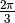
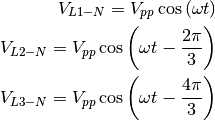
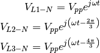
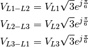
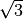
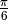
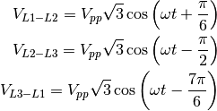

This examples shows the computation of the voltage for the Y and Delta configurations.
import math
import numpy as np
import matplotlib.pylab as plt
from PySpice.Unit.Units import *
Let use an European 230 V / 50 Hz electric network.
frequency = Frequency(50)
w = frequency.pulsation
period = frequency.period
rms_mono = 230
amplitude_mono = rms_mono * math.sqrt(2)
The phase voltages in Y configuration are dephased of :

We rewrite them in complex notation:

t = np.linspace(0, 3*float(period), 1000)
L1 = amplitude_mono * np.cos(t*w)
L2 = amplitude_mono * np.cos(t*w - 2*math.pi/3)
L3 = amplitude_mono * np.cos(t*w - 4*math.pi/3)
From these expressions, we compute the voltage in delta configuration using trigonometric identities :

In comparison to the Y configuration, the voltages in delta configuration are magnified by a factor  and dephased of .
Finally we rewrite them in temporal notation:

rms_tri = math.sqrt(3) * rms_mono
amplitude_tri = rms_tri * math.sqrt(2)
L12 = amplitude_tri * np.cos(t*w + math.pi/6)
L23 = amplitude_tri * np.cos(t*w - math.pi/2)
L31 = amplitude_tri * np.cos(t*w - 7*math.pi/6)
Now we plot the waveforms:
figure = plt.figure(1, (20, 10))
plt.plot(t, L1, t, L2, t, L3,
t, L12, t, L23, t, L31,
# t, L1-L2, t, L2-L3, t, L3-L1,
)
plt.grid()
plt.title('Three-phase electric power: Y and Delta configurations (230V Mono/400V Tri 50Hz Europe)')
plt.legend(('L1-N', 'L2-N', 'L3-N',
'L1-L2', 'L2-L3', 'L3-L1'),
loc=(.7,.5))
plt.xlabel('t [s]')
plt.ylabel('[V]')
plt.axhline(y=rms_mono, color='blue')
plt.axhline(y=-rms_mono, color='blue')
plt.axhline(y=rms_tri, color='blue')
plt.axhline(y=-rms_tri, color='blue')
plt.show()